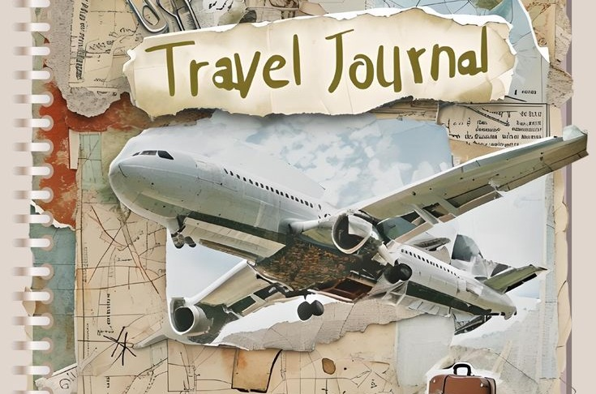
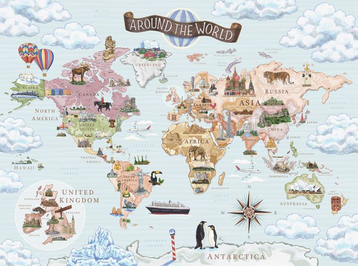
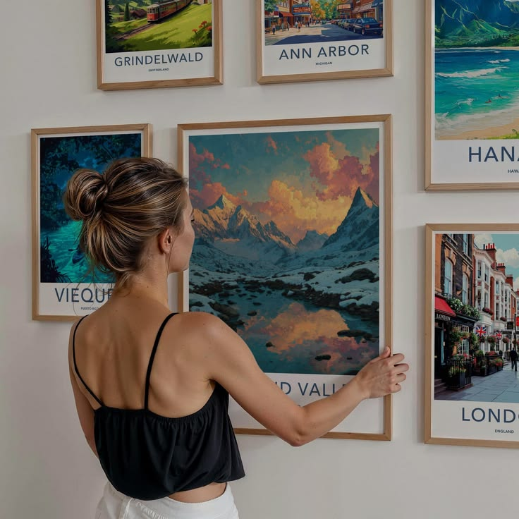

Every trip has a story. Write yours.
Capture every destination, every memory, and every adventure in one beautiful travel journal.
Start Your Journey →
Capture Every Journey
Write down the routes, the meals, the little moments — before they fade. Wanderlog turns your travels into a story worth keeping.

Explore the World
Every trip you log adds another pin to your personal map — a growing record of everywhere you've been.

Relive Your Memories
Look back anytime. Your journal grows with you, one destination at a time — ready to revisit whenever you like.
Find Your Next Adventure
Wanderlog isn't just where trips end up — it's where your next one starts. Get inspired, then go write about it.